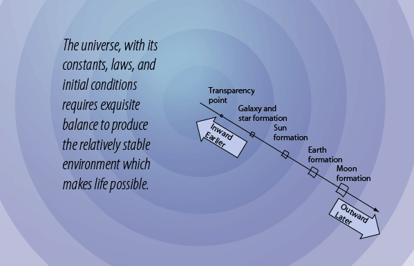

How are galaxy and star formation initated?
The conditions for forming the vast number of galaxies we see yet contain a large element of mystery. If the expanding universe were perfectly uniform in density, then there would be no net gravitational attraction to initiate the formation of galaxies. Yet the evidence indicates that it was largely "smooth". The irregularities in mass must have been very small and formed very early in the history of the universe.
| What conditions were necessary to form our Sun? |
HyperPhysics  | R Nave |